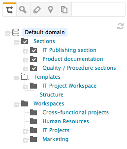
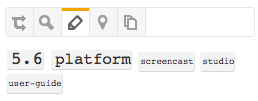

nuxeo / Trainings
## Retrouver ses documents
###Arbre de navigation
#### Structure du domaine

###Nuage de tags

#### Tags = mots-clés appliqués par les utilisateurs
#### Plus un tag est utilisé, plus il est affiché en gros
#### Toute personne ayant accès au document peut gérer ses tags
###Recherche simple
#### Recherche plein texte sur :
- Titre des documents
- Description
- Contenu
- Utilisateurs et groupes (suggestion uniquement)
### Recherche multi-critères
- Possible d'utiliser différents critères
- Les recherches peuvent être enregistrées
- Une fois enregistrées, les recherches peuvent être gérées depuis l'onglet Home
 ###Exercice - Recherche de documents
- Retrouvez les documents ayant le mot clé
###Exercice - Recherche de documents
- Retrouvez les documents ayant le mot clé newsletter
- Enregistrez cette recherche
- Récupérez et visualisez votre recherche enregistrée
## Questions ?
## [Point sur l'agenda](0.0.1-agenda.html)
## Organiser ses raccourcis
### Organiser ses raccourcis
#### Sélection
- Accès rapide à une sélection de documents
- Ajout depuis l'onglet contenu
#### Collections (Nuxeo 6.0 et +)
- Géré depuis l'onglet contenu et les boutons contextuels
- Favoris accessibles depuis l'espace personnel
- Autres collections accessibles depuis l'espace home
- Les collections peuvent être partagées
###Exercice - Organiser ses raccourcis
#### Sélection
- Ajoutez l'espace du service communication dans votre sélection
#### Collections
- Placez quelques documents situés dans ces espaces dans une collection Agents administratifs - liens utiles
- Ajoutez ou mettez à jour la description de votre collection
## Questions ?
## [Point sur l'agenda](0.0.1-agenda.html)
←
→
/
#